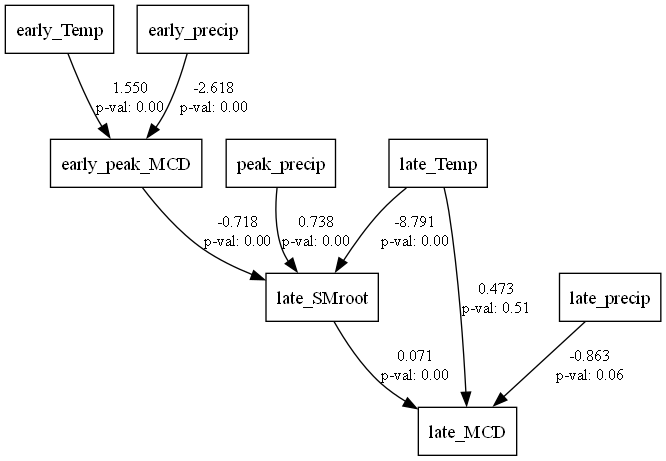
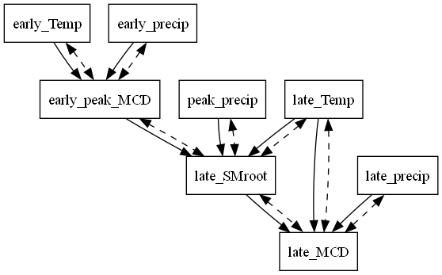
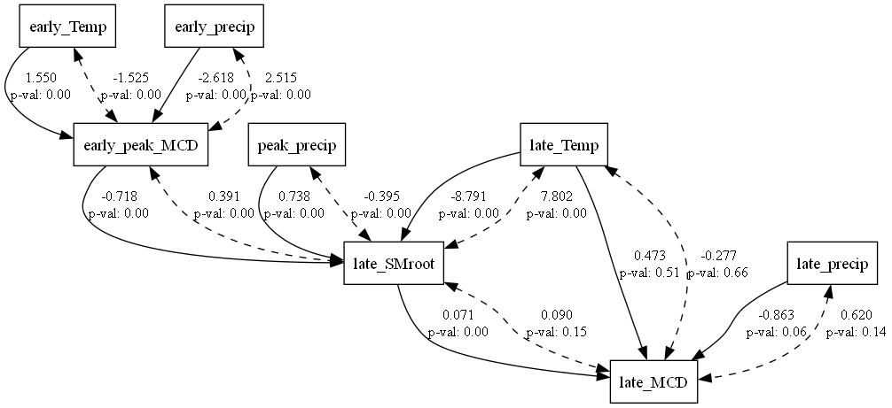

Report: D:\Greening\\Upload_samples\\Result\SEM//energy_limited_MCD
Model information
Model class:
Model
Number of samples:
113202
Objective function:
MLW
Converged:
Yes
Description in semopy syntax:
# regressions
early_peak_MCD~early_Temp+early_precip
late_SMroot~ early_peak_MCD+late_Temp+peak_precip
late_MCD ~ late_SMroot + late_Temp+late_precip
# residual correlations
early_peak_MCD~~early_peak_MCD
late_SMroot~~late_SMroot
late_MCD~~late_MCD
early_peak_MCD~~early_Temp
early_peak_MCD~~early_precip
late_SMroot~~early_peak_MCD
late_MCD~~late_SMroot
late_SMroot~~late_Temp
late_MCD~~late_Temp
late_SMroot~~peak_precip
late_MCD~~late_precip
all
late_precip, early_peak_MCD, late_SMroot, late_MCD, early_precip, peak_precip, late_Temp, early_Temp
endogenous
late_SMroot, late_MCD, early_peak_MCD
exogenous
late_precip, early_precip, peak_precip, late_Temp, early_Temp
observed
late_MCD, early_Temp, early_peak_MCD, early_precip, late_SMroot, late_Temp, late_precip, peak_precip
latent
indicator
output
_output
late_MCD
inner
early_Temp, early_peak_MCD, early_precip, late_SMroot, late_Temp, late_precip, peak_precip




Estimates
Estimate
P-value
Regressions:
early_peak_MCD ~
early_Temp
1.550
0.000
early_precip
-2.618
0.000
late_SMroot ~
early_peak_MCD
-0.718
0.000
late_Temp
-8.791
0.000
peak_precip
0.738
0.000
late_MCD ~
late_SMroot
0.071
0.000
late_Temp
0.473
0.510
late_precip
-0.863
0.063
Variances:
early_peak_MCD
9.004
0.000
late_SMroot
69.041
0.000
late_MCD
0.000
1.000
Covariances:
early_peak_MCD ~
early_Temp
-1.525
0.000
early_precip
2.515
0.000
late_SMroot ~
early_peak_MCD
0.391
0.000
late_Temp
7.802
0.000
peak_precip
-0.395
0.000
late_MCD ~
late_SMroot
0.090
0.154
late_Temp
-0.277
0.660
late_precip
0.620
0.137
lval op rval Estimate Std. Err z-value \
0 early_peak_MCD ~ early_Temp 1.550484e+00 0.068456 2.264950e+01
1 early_peak_MCD ~ early_precip -2.618090e+00 0.076376 -3.427890e+01
2 late_SMroot ~ early_peak_MCD -7.182623e-01 0.037363 -1.922398e+01
3 late_SMroot ~ late_Temp -8.790615e+00 0.140919 -6.238081e+01
4 late_SMroot ~ peak_precip 7.382271e-01 0.032222 2.291086e+01
5 late_MCD ~ late_SMroot 7.136553e-02 0.014817 4.816379e+00
6 late_MCD ~ late_Temp 4.727312e-01 0.717415 6.589370e-01
7 late_MCD ~ late_precip -8.628766e-01 0.463497 -1.861667e+00
8 early_peak_MCD ~~ early_peak_MCD 9.004498e+00 0.587937 1.531540e+01
9 early_peak_MCD ~~ early_Temp -1.524894e+00 0.065938 -2.312624e+01
10 early_peak_MCD ~~ early_precip 2.515280e+00 0.077155 3.260029e+01
11 late_SMroot ~~ late_SMroot 6.904080e+01 2.157761 3.199650e+01
12 late_SMroot ~~ early_peak_MCD 3.912636e-01 0.011988 3.263869e+01
13 late_SMroot ~~ late_Temp 7.801875e+00 0.124861 6.248437e+01
14 late_SMroot ~~ peak_precip -3.952388e-01 0.028986 -1.363537e+01
15 late_MCD ~~ late_MCD 3.147560e-19 0.136246 2.310208e-18
16 late_MCD ~~ late_SMroot 9.039762e-02 0.063398 1.425868e+00
17 late_MCD ~~ late_Temp -2.772717e-01 0.629808 -4.402480e-01
18 late_MCD ~~ late_precip 6.199391e-01 0.417214 1.485901e+00
p-value
0 0.000000
1 0.000000
2 0.000000
3 0.000000
4 0.000000
5 0.000001
6 0.509936
7 0.062650
8 0.000000
9 0.000000
10 0.000000
11 0.000000
12 0.000000
13 0.000000
14 0.000000
15 1.000000
16 0.153906
17 0.659758
18 0.137305
Name of objective: MLW Optimization method: SLSQP Optimization successful. Optimization terminated successfully Objective value: 0.025 Number of iterations: 388 Params: 1.550 -2.618 -0.718 -8.791 0.738 0.071 0.473 -0.863 9.004 -1.525 2.515 69.041 0.391 7.802 -0.395 0.000 0.090 -0.277 0.620
Fit indices
| DoF | DoF Baseline | chi2 | chi2 p-value | chi2 Baseline |
|---|---|---|---|---|
| 17.000 | 33.000 | 2817.737 | 0.000 | 64443.261 |
| CFI | GFI | AGFI | NFI | TLI |
|---|---|---|---|---|
| 0.957 | 0.956 | 0.915 | 0.956 | 0.916 |
| RMSEA | AIC | BIC | LogLik |
|---|---|---|---|
| 0.038 | 37.950 | 221.052 | 0.025 |
Matrices
Covariance matrix
| late_MCD | early_Temp | early_peak_MCD | early_precip | late_SMroot | late_Temp | late_precip | peak_precip | |
|---|---|---|---|---|---|---|---|---|
| late_MCD | 0.90 | -0.11 | 0.06 | -0.00 | -0.13 | 0.16 | -0.19 | -0.01 |
| early_Temp | -0.11 | 0.81 | 0.10 | -0.14 | -0.04 | 0.00 | -0.00 | 0.08 |
| early_peak_MCD | 0.06 | 0.10 | 0.29 | -0.03 | -0.08 | 0.02 | -0.02 | -0.06 |
| early_precip | -0.00 | -0.14 | -0.03 | 0.89 | 0.14 | -0.01 | 0.01 | 0.07 |
| late_SMroot | -0.13 | -0.04 | -0.08 | 0.14 | 0.92 | -0.08 | 0.28 | 0.38 |
| late_Temp | 0.16 | 0.00 | 0.02 | -0.01 | -0.08 | 0.89 | -0.03 | -0.01 |
| late_precip | -0.19 | -0.00 | -0.02 | 0.01 | 0.28 | -0.03 | 0.95 | 0.03 |
| peak_precip | -0.01 | 0.08 | -0.06 | 0.07 | 0.38 | -0.01 | 0.03 | 0.88 |
| late_MCD | early_Temp | early_peak_MCD | early_precip | late_SMroot | late_Temp | late_precip | peak_precip | |
|---|---|---|---|---|---|---|---|---|
| late_MCD | 0.89 | 0.00 | 0.04 | -0.01 | -0.13 | 0.16 | -0.19 | -0.00 |
| early_Temp | 0.00 | 0.81 | 0.10 | -0.14 | -0.05 | 0.00 | -0.00 | 0.08 |
| early_peak_MCD | 0.04 | 0.10 | 0.29 | -0.03 | -0.08 | 0.03 | -0.04 | -0.06 |
| early_precip | -0.01 | -0.14 | -0.03 | 0.89 | 0.14 | -0.01 | 0.01 | 0.07 |
| late_SMroot | -0.13 | -0.05 | -0.08 | 0.14 | 0.92 | -0.08 | 0.28 | 0.38 |
| late_Temp | 0.16 | 0.00 | 0.03 | -0.01 | -0.08 | 0.89 | -0.03 | -0.01 |
| late_precip | -0.19 | -0.00 | -0.04 | 0.01 | 0.28 | -0.03 | 0.95 | 0.03 |
| peak_precip | -0.00 | 0.08 | -0.06 | 0.07 | 0.38 | -0.01 | 0.03 | 0.88 |
Model matrices
| early_Temp | early_peak_MCD | early_precip | late_SMroot | late_Temp | late_precip | peak_precip | |
|---|---|---|---|---|---|---|---|
| early_Temp | 0.00 | 0.00 | 0.00 | 0.00 | 0.00 | 0.00 | 0.00 |
| early_peak_MCD | 1.55 | 0.00 | -2.62 | 0.00 | 0.00 | 0.00 | 0.00 |
| early_precip | 0.00 | 0.00 | 0.00 | 0.00 | 0.00 | 0.00 | 0.00 |
| late_SMroot | 0.00 | -0.72 | 0.00 | 0.00 | -8.79 | 0.00 | 0.74 |
| late_Temp | 0.00 | 0.00 | 0.00 | 0.00 | 0.00 | 0.00 | 0.00 |
| late_precip | 0.00 | 0.00 | 0.00 | 0.00 | 0.00 | 0.00 | 0.00 |
| peak_precip | 0.00 | 0.00 | 0.00 | 0.00 | 0.00 | 0.00 | 0.00 |
| early_Temp | early_peak_MCD | early_precip | late_SMroot | late_Temp | late_precip | peak_precip | |
|---|---|---|---|---|---|---|---|
| early_Temp | 0.00 | 0.00 | 0.00 | 0.00 | 0.00 | 0.00 | 0.00 |
| early_peak_MCD | 0.00 | 0.00 | 0.00 | 0.00 | 0.00 | 0.00 | 0.00 |
| early_precip | 0.00 | 0.00 | 0.00 | 0.00 | 0.00 | 0.00 | 0.00 |
| late_SMroot | 0.00 | 0.00 | 0.00 | 0.00 | 0.00 | 0.00 | 0.00 |
| late_Temp | 0.00 | 0.00 | 0.00 | 0.00 | 0.00 | 0.00 | 0.00 |
| late_precip | 0.00 | 0.00 | 0.00 | 0.00 | 0.00 | 0.00 | 0.00 |
| peak_precip | 0.00 | 0.00 | 0.00 | 0.00 | 0.00 | 0.00 | 0.00 |
| early_Temp | early_peak_MCD | early_precip | late_SMroot | late_Temp | late_precip | peak_precip | |
|---|---|---|---|---|---|---|---|
| early_Temp | 0.00 | 0.00 | 0.00 | 0.00 | 0.00 | 0.00 | 0.00 |
| early_peak_MCD | _b1 | 0.00 | _b2 | 0.00 | 0.00 | 0.00 | 0.00 |
| early_precip | 0.00 | 0.00 | 0.00 | 0.00 | 0.00 | 0.00 | 0.00 |
| late_SMroot | 0.00 | _b3 | 0.00 | 0.00 | _b4 | 0.00 | _b5 |
| late_Temp | 0.00 | 0.00 | 0.00 | 0.00 | 0.00 | 0.00 | 0.00 |
| late_precip | 0.00 | 0.00 | 0.00 | 0.00 | 0.00 | 0.00 | 0.00 |
| peak_precip | 0.00 | 0.00 | 0.00 | 0.00 | 0.00 | 0.00 | 0.00 |
| early_Temp | early_peak_MCD | early_precip | late_SMroot | late_Temp | late_precip | peak_precip | |
|---|---|---|---|---|---|---|---|
| late_MCD | 0.00 | 0.00 | 0.00 | 0.07 | 0.47 | -0.86 | 0.00 |
| early_Temp | 1.00 | 0.00 | 0.00 | 0.00 | 0.00 | 0.00 | 0.00 |
| early_peak_MCD | 0.00 | 1.00 | 0.00 | 0.00 | 0.00 | 0.00 | 0.00 |
| early_precip | 0.00 | 0.00 | 1.00 | 0.00 | 0.00 | 0.00 | 0.00 |
| late_SMroot | 0.00 | 0.00 | 0.00 | 1.00 | 0.00 | 0.00 | 0.00 |
| late_Temp | 0.00 | 0.00 | 0.00 | 0.00 | 1.00 | 0.00 | 0.00 |
| late_precip | 0.00 | 0.00 | 0.00 | 0.00 | 0.00 | 1.00 | 0.00 |
| peak_precip | 0.00 | 0.00 | 0.00 | 0.00 | 0.00 | 0.00 | 1.00 |
| early_Temp | early_peak_MCD | early_precip | late_SMroot | late_Temp | late_precip | peak_precip | |
|---|---|---|---|---|---|---|---|
| late_MCD | 0.00 | 0.00 | 0.00 | 0.00 | 0.00 | 0.00 | 0.00 |
| early_Temp | 1.00 | 0.00 | 0.00 | 0.00 | 0.00 | 0.00 | 0.00 |
| early_peak_MCD | 0.00 | 1.00 | 0.00 | 0.00 | 0.00 | 0.00 | 0.00 |
| early_precip | 0.00 | 0.00 | 1.00 | 0.00 | 0.00 | 0.00 | 0.00 |
| late_SMroot | 0.00 | 0.00 | 0.00 | 1.00 | 0.00 | 0.00 | 0.00 |
| late_Temp | 0.00 | 0.00 | 0.00 | 0.00 | 1.00 | 0.00 | 0.00 |
| late_precip | 0.00 | 0.00 | 0.00 | 0.00 | 0.00 | 1.00 | 0.00 |
| peak_precip | 0.00 | 0.00 | 0.00 | 0.00 | 0.00 | 0.00 | 1.00 |
| early_Temp | early_peak_MCD | early_precip | late_SMroot | late_Temp | late_precip | peak_precip | |
|---|---|---|---|---|---|---|---|
| late_MCD | 0.00 | 0.00 | 0.00 | _b6 | _b7 | _b8 | 0.00 |
| early_Temp | 1.00 | 0.00 | 0.00 | 0.00 | 0.00 | 0.00 | 0.00 |
| early_peak_MCD | 0.00 | 1.00 | 0.00 | 0.00 | 0.00 | 0.00 | 0.00 |
| early_precip | 0.00 | 0.00 | 1.00 | 0.00 | 0.00 | 0.00 | 0.00 |
| late_SMroot | 0.00 | 0.00 | 0.00 | 1.00 | 0.00 | 0.00 | 0.00 |
| late_Temp | 0.00 | 0.00 | 0.00 | 0.00 | 1.00 | 0.00 | 0.00 |
| late_precip | 0.00 | 0.00 | 0.00 | 0.00 | 0.00 | 1.00 | 0.00 |
| peak_precip | 0.00 | 0.00 | 0.00 | 0.00 | 0.00 | 0.00 | 1.00 |
| early_Temp | early_peak_MCD | early_precip | late_SMroot | late_Temp | late_precip | peak_precip | |
|---|---|---|---|---|---|---|---|
| early_Temp | 0.81 | -1.52 | -0.14 | 0.00 | 0.00 | -0.00 | 0.08 |
| early_peak_MCD | -1.52 | 9.00 | 2.52 | 0.39 | 0.00 | 0.00 | 0.00 |
| early_precip | -0.14 | 2.52 | 0.89 | 0.00 | -0.01 | 0.01 | 0.07 |
| late_SMroot | 0.00 | 0.39 | 0.00 | 69.04 | 7.80 | 0.00 | -0.40 |
| late_Temp | 0.00 | 0.00 | -0.01 | 7.80 | 0.89 | -0.03 | -0.01 |
| late_precip | -0.00 | 0.00 | 0.01 | 0.00 | -0.03 | 0.95 | 0.03 |
| peak_precip | 0.08 | 0.00 | 0.07 | -0.40 | -0.01 | 0.03 | 0.88 |
| early_Temp | early_peak_MCD | early_precip | late_SMroot | late_Temp | late_precip | peak_precip | |
|---|---|---|---|---|---|---|---|
| early_Temp | 0.81 | 0.00 | -0.14 | 0.00 | 0.00 | -0.00 | 0.08 |
| early_peak_MCD | 0.00 | 0.14 | 0.00 | 0.00 | 0.00 | 0.00 | 0.00 |
| early_precip | -0.14 | 0.00 | 0.89 | 0.00 | -0.01 | 0.01 | 0.07 |
| late_SMroot | 0.00 | 0.00 | 0.00 | 0.46 | 0.00 | 0.00 | 0.00 |
| late_Temp | 0.00 | 0.00 | -0.01 | 0.00 | 0.89 | -0.03 | -0.01 |
| late_precip | -0.00 | 0.00 | 0.01 | 0.00 | -0.03 | 0.95 | 0.03 |
| peak_precip | 0.08 | 0.00 | 0.07 | 0.00 | -0.01 | 0.03 | 0.88 |
| early_Temp | early_peak_MCD | early_precip | late_SMroot | late_Temp | late_precip | peak_precip | |
|---|---|---|---|---|---|---|---|
| early_Temp | _c12 | _c2 | _c14 | 0.00 | _c18 | _c20 | _c25 |
| early_peak_MCD | _c2 | _c1 | _c3 | _c5 | 0.00 | 0.00 | 0.00 |
| early_precip | _c14 | _c3 | _c13 | 0.00 | _c15 | _c21 | _c16 |
| late_SMroot | 0.00 | _c5 | 0.00 | _c4 | _c6 | 0.00 | _c7 |
| late_Temp | _c18 | 0.00 | _c15 | _c6 | _c17 | _c22 | _c26 |
| late_precip | _c20 | 0.00 | _c21 | 0.00 | _c22 | _c19 | _c23 |
| peak_precip | _c25 | 0.00 | _c16 | _c7 | _c26 | _c23 | _c24 |
| late_MCD | early_Temp | early_peak_MCD | early_precip | late_SMroot | late_Temp | late_precip | peak_precip | |
|---|---|---|---|---|---|---|---|---|
| late_MCD | 0.00 | 0.00 | 0.00 | 0.00 | 0.09 | -0.28 | 0.62 | 0.00 |
| early_Temp | 0.00 | 0.00 | 0.00 | 0.00 | 0.00 | 0.00 | 0.00 | 0.00 |
| early_peak_MCD | 0.00 | 0.00 | 0.00 | 0.00 | 0.00 | 0.00 | 0.00 | 0.00 |
| early_precip | 0.00 | 0.00 | 0.00 | 0.00 | 0.00 | 0.00 | 0.00 | 0.00 |
| late_SMroot | 0.09 | 0.00 | 0.00 | 0.00 | 0.00 | 0.00 | 0.00 | 0.00 |
| late_Temp | -0.28 | 0.00 | 0.00 | 0.00 | 0.00 | 0.00 | 0.00 | 0.00 |
| late_precip | 0.62 | 0.00 | 0.00 | 0.00 | 0.00 | 0.00 | 0.00 | 0.00 |
| peak_precip | 0.00 | 0.00 | 0.00 | 0.00 | 0.00 | 0.00 | 0.00 | 0.00 |
| late_MCD | early_Temp | early_peak_MCD | early_precip | late_SMroot | late_Temp | late_precip | peak_precip | |
|---|---|---|---|---|---|---|---|---|
| late_MCD | 0.45 | 0.00 | 0.00 | 0.00 | 0.00 | 0.00 | 0.00 | 0.00 |
| early_Temp | 0.00 | 0.00 | 0.00 | 0.00 | 0.00 | 0.00 | 0.00 | 0.00 |
| early_peak_MCD | 0.00 | 0.00 | 0.00 | 0.00 | 0.00 | 0.00 | 0.00 | 0.00 |
| early_precip | 0.00 | 0.00 | 0.00 | 0.00 | 0.00 | 0.00 | 0.00 | 0.00 |
| late_SMroot | 0.00 | 0.00 | 0.00 | 0.00 | 0.00 | 0.00 | 0.00 | 0.00 |
| late_Temp | 0.00 | 0.00 | 0.00 | 0.00 | 0.00 | 0.00 | 0.00 | 0.00 |
| late_precip | 0.00 | 0.00 | 0.00 | 0.00 | 0.00 | 0.00 | 0.00 | 0.00 |
| peak_precip | 0.00 | 0.00 | 0.00 | 0.00 | 0.00 | 0.00 | 0.00 | 0.00 |
| late_MCD | early_Temp | early_peak_MCD | early_precip | late_SMroot | late_Temp | late_precip | peak_precip | |
|---|---|---|---|---|---|---|---|---|
| late_MCD | _c8 | 0.00 | 0.00 | 0.00 | _c9 | _c10 | _c11 | 0.00 |
| early_Temp | 0.00 | 0.00 | 0.00 | 0.00 | 0.00 | 0.00 | 0.00 | 0.00 |
| early_peak_MCD | 0.00 | 0.00 | 0.00 | 0.00 | 0.00 | 0.00 | 0.00 | 0.00 |
| early_precip | 0.00 | 0.00 | 0.00 | 0.00 | 0.00 | 0.00 | 0.00 | 0.00 |
| late_SMroot | _c9 | 0.00 | 0.00 | 0.00 | 0.00 | 0.00 | 0.00 | 0.00 |
| late_Temp | _c10 | 0.00 | 0.00 | 0.00 | 0.00 | 0.00 | 0.00 | 0.00 |
| late_precip | _c11 | 0.00 | 0.00 | 0.00 | 0.00 | 0.00 | 0.00 | 0.00 |
| peak_precip | 0.00 | 0.00 | 0.00 | 0.00 | 0.00 | 0.00 | 0.00 | 0.00 |